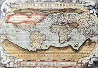

De: La Frikipedia, la enciclopedia extremadamente seria.
De: La Frikipedia, la enciclopedia extremadamente seria. De: La Frikipedia, la enciclopedia extremadamente seria.
| De la serie Países del planeta tierra: | |||||
| Antártica, Polo Sur, Ciudad del Pe | |||||
|---|---|---|---|---|---|
| |||||
| Lema: Antartis terra glacies et magna terra est | |||||
| Himno: I will survive
| |||||
| 
| |||||
| Capital | Penguin City | ||||
| Mayor ciudad | Las Vegas (Hielada, Antártica) | ||||
| Lenguas oficiales | Pingüinés | ||||
| Gobierno | Monarquía | ||||
| Emperador | Pingüino Emperdador | ||||
| Área | No medida | ||||
| Población | Aprox. 1000000 pingüinos | ||||
| Moneda | Pescadólar | ||||
| Zona horaria | gt-23 | ||||
| Dominio Internet | .pinguino | ||||
| Código telefónico | No hay
| ||||
| Zona derretible | |||||
«…y el joven pingüino, recorrió todo el continente en busca de comida para su familia, caminó y caminó, por valles, montañas, ríos y selvas. Combatió leones, tigres y otras fieras; nadó en mares profundos y se metió en cuevas tenebrosas, y al fin, después de todo el arduo trabajo, lo supo, estaba jodidamente perdido»
~ Viejo cuento Antártico
La Antártica, también conocida cómo Antártida, o Polo Sur, es el país-continente independiente más grande de este mundo y también de otros. El país tiene un tipo de gobierno monárquico, regido por el Pingüino Emperador. Es un país pacífico, si no es molestado. Actualmente se cree que algunos países han llegado a un acuerdo con el Imperio Antártico para que los humanos lo habiten.
La historia de la Antártica es una historia de guerra, amor, pescados y pingüinos, contada de generación en generación, sólo por pocas personas conocida, será la primera y única vez que será puesta a disposición del público en cereal general.
En 1492, cuando Cristóbal Colón preparaba su barco para partir hacia la India en busca de mujeres, un pingüino fugitivo de la ley, llamado Antonio Linuxio, era perseguido por el intento de asesinato a un rico conde de la zona, llamado Bill Gates I. Linuxio vio el barco de Colón y decidió esconderse en él para despistar a los guardias reales que lo perseguían. Según cuenta la leyenda, este se metió en un barril del barco y aguardo, quedándose dormido.
Al despertar, notó que el barco se movía, y estaba en pleno mar. Salió a conocer el barco, pero fue capturado y lanzado por la borda por no pagar su entrada al mismo. Se dice que Linuxio nadó por mil y una noches hasta que descubrió tierra firme, una tierra blanca y fría cómo nunca se había visto antes. La recorrió y notó que en el agua circundante a esta, habitaban miles de peces, así que decidió establecer un campamento allí.
Después de unos años, se sintió solitario en su nuevo reino, así que sacó su celular para llamar a todos los pingüinos que conocía, pero la señal era muy mala por esos lados. Sin saber cómo avisar a sus congéneres, escribió un mensaje en una botella, y lo arrojó al mar. Algún pingüino leyó el mensaje y avisó a todos. En menos de 5 años, la Antártica se llenó completamente de pingüinos.
10 años después de que Linuxio llegara a la Antártica, se vio la necesidad de formar un gobierno, para acabar con la anarquía y el desorden que en ese tiempo se daban. Él, cómo descubridor, se autoproclamó Pingüino Emperador, en un acto ceremonial también instituido por él. Todos amaban al primer Emperador, todos lo creían un líder justo y honorable.
Linuxio construyó hospitales, escuelas, tiendas porno, relojerías y pastelerías. Conformó un ejército con los pingüinos más capacitados, y una división de caza, para adquirir y vender los pescados a la nación a precios razonables. Todo parecía ir bien, pero Linuxio empezó a hacer notar sus orígenes cómo ladrón
Pero conforme pasaban los años, el país empeoró. Escándalos de corrupción, falta de alimento y suicidios masivos, ocasionaron el primer golpe de Estado jamás efectuado en la región, llevado acabo por el General. Güin Pen, un oficial de origen asiático conocido por ser duro y estricto. Linuxio fue derrocado y expulsado del país que había fundado, una noche del 13 del mes 13 de 1460.
El General Güin Pen había tomado las riendas del país, a gusto de unos y disgusto de otros, lo que llevo a que el país se “dividiera” en dos. Hubo mucha tensión en los años siguientes, ya que los pingüinos de Pen destruían todo aquello que significara rebeldía, en un intento de mantener bajo control el país y sus habitantes
Poco a poco, Güin Pen fue adquiriendo más y más seguidores, porque a diferencia de lo que muchos creían, no era un mal líder. Paralizo todo el dinero que Linuxio le había sacado al país, y lo invirtió en el mismo. Por primera vez, en 1462, el país tenía bandera y escudo de armas.
Pen creó nuevos cargos gubernamentales nunca antes vistos en el país, que ayudaron a mantener ese orden y paz que tenía hasta entonces la nación. Pen también, avanzó en el campo de lo deportivo, promocionando el deporte, y hasta instituyó una liga de furbo, con su propio equipo particular, Los Pen-Wins, el cual ganó la liga en su primer año.
En 1477, el país entró en una crisis económica por falta de Pescado, y parecía que era el fin para el país. Pero para Pene, esto no tenía que ser así. En un ingenioso movimiento fundó la que es la mayor ciudad de la Antártica, Las Vegas, la denominada Ciudad del Pescado , donde Pen inauguró muchos casinos y bares, todos propiedad del Gobierno. Todos los pingüinos fueron allí y se recaudaron más de 10 billones de Pescadólares, mucha parte de los cuales fueron invertidos para publicidad que fue transmitida por todo el mundo. Miles de personas llegaron a la Antártica, lo cual provocó un incremento del número de puertos y aeropuertos del país. Así, esta nación entró en la mayor abonanza de su historia hasta el momento.
En 1499, todos los Antárticos veían cómo se inauguraba la 1000 tienda porno del país, y el 31 de diciembre, todos festejaron la llegada del nuevo siglo, hubo mucha especulación por el fin del mundo, guerras nucleares, un virus llamado Y1K (predecesor del Y2K) que acabaría con todos, pero a la mayoría pareció no importarle.
En 1510, después de dos años de enfermedad, el Emperador Güin Pen, murió tranquilamente en su hogar, rodeado de su familia, y el trono fue heredado por su hijo Pen-echiko, el cual se convirtió en la persona mas joven en heredar el trono, con tan sólo 8 meses de edad.
Teniendo el nuevo Emperador tan poca edad, su madre, cuyo nombre es desconocido, tomó las decisiones por él. Todo siguió el transcurso normal de las cosas, al país le estaba yendo bien por todo el dinero que ingresaba gracias a las prostitutas y a los juegos de azar, así que la madre decidió construir una gran maravilla en honor a su hijo. Una gran estatua de una mujer con una corona con picos, una especie de antorcha levantada con su mano izquierda y unas revistas porno en la otra. La Estatua de la Agonía y el Sufrimiento, fue bautizada de esta forma ya que todos los pingüinos que cometieran un delito grave eran arrojados desde un avión hacia la estatua, y morían al caer en la corona o la antorcha.
La estatua fue inaugurada para 1523, justo el año en el que el Emperador podía empezar a tomar sus propias decisiones. El primer pingüino arrojado a esta fue el Dr. P. Terrance, él cual fue acusado de herejía, al afirmar que la tierra tenia forma de engrapadora, no con forma de plátano, la teoría que hasta día de hoy es irrefutable.
La primer orden de Pen-echiko fue que todos los pingüinos, a partir de la fecha, debían aprender a volar. Cómo por todos es sabido, los pingüinos no vuelan debido al pH de su estructura en sí, que los hace demasiado alcalinos para volar, pero echiko no entendía nada de Ciencias Sociales por lo que hizo caso omiso a las advertencias. Miles de pingüinos murieron, hasta el punto en el que la ley fue removida, y Pen-echiko fue castigado y enviado a su cuarto.
10 años y muchas leyes estúpidas después, Pen-echiko maduró, y se convirtió en todo un pingüino de pelo en pecho. Pero, los tiempos venideros no eran buenos. La Antártica entró en una guerra con EE.UU que duró casi 10 años.
Pen-echiko, viniendo de una familia de soldados y aventureros, tenía la idea de conquistar tierras extrañas y hacer más grande su imperio. Así que el 12 de Diciembre de 1533 decidió zarpar en busca de tierras desconocidas, y terminó de algún u otro modo, en Alaska. Este hermoso paraíso, de cálidos mares y playas, lleno de gente, le cautivo el corazón y supo, que era el lugar más hermoso de todos, así que hizo lo que cualquiera hubiera hecho, lo llenó de soldados y arrasó con todo. Lo que Pen-echiko no sabía era que esa tierra había sido recién comprada por un país emergente, llamado Estados Unidos, el cual se lo había comprado a otro llamado Rusia.
Al chamán líder de EE.UU no le gustó la idea de ver a su tierra invadida, y mandó todos los vaqueros que tenía a disposición para reconquistar esa tierra. Lo mismo hizo echiko, sólo que mandó pingüinos, no vaqueros, y la guerra se desató. Ambos países mandaron una cantidad aproximada de 1 zillón de soldados a Alaska.
Pero, transcurridos 8 años de conflicto, Pen-echiko empezó a perder, sus Soldados Pingüino sólo tenían 750 de Ataque, y 500 de defensa, y los vaqueros los empezaron a hacer pedazos. Así que Pen-echiko decidió sacar su arma secreta, con la ayuda de un mago, un científico y un castor superdesarrollado, creó una bomba, capaz de volver a Alaska un helado e inhóspito lugar, llamada Antartic-1 . El líder Estadounidense no se asustó con su amenaza y siguió el ataque, así que Pen-echiko la estallo, en menos de una semana, el bello y caluroso lugar que era Alaska se convirtió en frio y deshabitado. Era tal el frio, que los vaqueros no lo soportaron y la mayoría huyó.
Pen-echiko se sentía el rey del mundo, había conquistado Alaska. Pero el chamán gringo no se había dado por vencido. Solicitó una cumbre extraordinaria ente él y Pen-echiko para discutir algunos temas. El pingüino Emperador no estaba dispuesto a ceder en nada, pero las palabras del chamán lo dejaron sin otra opción
El chamán, le ofreció el siguiente trato:
Su gobierno (EE.UU) no haría el público su mas reciente descubrimiento, la carne de pingüino es comestible y deliciosa, y tampoco la comerciaría si:
Pen-echiko no tuvo otra opción que devolverse hacía su tierra, humillado, y sin Alaska, pero esa no era su peor noticia. En 1545, al llegar de nuevo a la Antártida, notó con horror que el país en su ausencia había sido conquistado por Rusia.
Al momento en el que Pen-echiko y sus hombres desembarcaron, fueron capturados y encerrados, al igual que habían hecho con casi todos los pingüinos del país. Parecía el fin de su imperio, pero este joven pingüino no era tan tonto cómo para ser vencido tan fácilmente. Mientras el país era Inrusializado, echiko, en compañía de su mago, el científico, y el castor superdesarrollado, Pebbels, que anteriormente lo habían ayudado a construir la bomba de invierno Antartic-1, empezaron a maquinar una idea que los ayudara a escapar de allí. El hecho de que sólo hubiera una celda de prisión en todo el país (ya que todo criminal era arrojado a la estatua) convino mucho para idear la forma de salir de allí. Consiguieron contactos en el exterior, los cuales les contrabandeaban metales, piezas de maquinaria, herramientas, y cosas por el estilo. Después de 2 años de trabajo duro, habían terminado la maquina que los sacaría de allí, una Máquina del tiempo.
La prepararon para viajar 1000 años en el futuro, hacia 2547, y ver que podían hacer allí.
Al llegar al año 2547, notaron con gran asombro, que todo era igual, nada en absoluto había ocurrido, solo que la gente era verde, de resto todo, edificios, tiendas, cines, era igual, hasta el cohete y viajaron a la luna.
En un lugar deshabitado entre una colonia jamaiquina y una colonia de la comunidad gay, establecieron la primera y única Colonia Lunar del Imperio Todopoderoso y Orgulloso de la Región Inhóspita del Sur (C.L.I.T.O.R.I.S), donde empezaron un proyecto que les consumiría 7 años.
A finales de 2554, el proyecto estaba terminado, un poderoso ejército de Pingüinos Robot había sido ensamblado, y estaban listos para volver a 1554 y patear algunos traseros Rusos, así que agrandaron su máquina del tiempo para que sus robot cupieran y regresaron al pasado.
Los pingüinos y el castor regresaron a su época, acompañados de su poderoso ejército de robots. Los Rusos intentaron detenerlos, pero las sofisticadas armas del ejército robot fueron mucho para los invasores. Con rayos láser, misiles tierra-ruso y visión derretidora, eliminaron a más de medio millar de rusos murieron, hasta que su presidente decidió retirar todas las tropas de esa zona definitivamente. Pen-echiko regresó cómo Emperador de su nación y todos lo aclamaron cómo un héroe. Pero el estado en que los rusos habían dejado el país era horrible. Edificios destruidos, calles y granjas bombardeadas significaban un nuevo reto para la administración de Pen-echiko.
Pen-echiko vio con horror el mal estado en el que los rusos dejaron su país en su ausencia, pero el problema era que no se contaba con el capital suficiente para reconstruir el país. Muchos de los prostíbulos, bares y casinos fueron Inrusializados o destruidos, por lo que no tenían fuentes de ingreso para reconstruir el país.
El Emperador reunió a sus hombres en un intento de ver la manera de recomponer al país. Muchas ideas surgieron, cómo la de legalizar las pocas drogas que no habían legalizado, pero no se llegó a ningún sitio. Pero una mañana de Septiembre, Pebbels, el castor, sugirió una buena idea.
Ese mismo día, el Emperador reunió a toda su población, y junto con los Robots pingüino, se metieron en la máquina del tiempo, y viajarían a algún lugar en el futuro donde ya el país hubiera sido reconstruido por otros, el año escogido, 2000.
Al llegar al años 2000, notaron que el país había sido limpiado, pero no por otros, sino que la naturaleza se encargó de "enterrar" bajo nieve los escombros. Después de un recorrido de investigación, se encontraron zonas donde diversos países habían montado "colonias", así que fueron expulsados y/o/u eliminados con ayuda de los robots. Actualmente se ha llegado a un acuerdo con el Imperio Antártico para que humanos del mundo establezcan colonias en los alrededores del Imperio, pagando, claro esta, una cuantiosa suma de Pescadólares.
Este periodo unicamente tubo la participación de los pingüinos cuando vieron a los argentinos poniendo bases cumbieras que hizo que los pingüinos también participaran en la guerra.El conflicto en la Antártida duró 2 meses, pero siguió en Argentina por 2 años.
Durante el conflicto se descubrió que a los pingüinos les gustaba el country.
La Antártica se encuentra ubicada en la parte inferior del planeta. Es el cuarto continente más grande del Mercurio. Tiene alrededor de 1.2 Chillones de centímetros de perímetro, y desde el aire, el país pareciera tener forma de pene, pero esto ocurre porque es confundida con la isla más cercana al país, laIsla de Perejil, habitada por Ewoks.
El país esta rodeado por hagua por todos sus costados, pero delimita con el país de los hombres topo abajo, literalmente, esta abajo de la Antártica. Y "delimita" con su colonia lunar, estando el C.L.I.T.O.R.I.S exactamente arriba de ella, en la Luna.
El punto más alto de la Antártica es el monte Senoíco, un monte perfectamente redondo y simétrico, que posee un "Submonte" justo en la punta, haciéndolo parecer un enorme seno. Por otra parte el punto o depresión más bajo del país esta ubicado en la zona donde antes se encontraba la Estatua de la Agonía y el Sufrimiento. Es un enorme hoyo que llega al centro de la tierra; actualmente sirve cómo entrada y salida del país de los Hombres topo.
La flora de la Antártica es el principal alimento del alimento ingerido por los pingüinos. Sin las algas que allí crecen, los peces no tendrían comida, ni nuestros amigos Antártiquianos. En el país crecen varios tipos de algas y plantas marinas, sin embargo, es en la tierra donde se encuentran las flores más famosas y hermosas del continente.
El país esta cubierto de margaritas, flor nacional de la Antártica, pero estas margaritas son especiales, diferentes a las demás, estas hablan. Mediante un extraño experimento realizado por Pebbels, el castor, las Margaritas fueron dotadas con el don de hablar, pero eso no las hizo más importantes. Aunque ahora hablen, son ignoradas y es mas odiadas, por su denotado mal olor de boca y odio hacia los pingüinos. Este odio mutuo hace que más de 15000 margaritas al año sean asesinadas por pingüinos, mientras 6 pingüinos al año son asesinados por bandas de margaritas.
Por el lado de la fauna, la antártica esta habitada en su totalidad por pingüinos, ningún otro animal habita esa zona, a excepción de los peces, que sirven ya sea de alimento o de moneda.
El Clima de la Antártica es el clima más estable del planeta. Nunca dejará de hacer frio lo que genera tanto odios cómo amores en los turístas. Algunos odian el frio, por lo que no se entiende por que viajan a la antártica. Pero en general, los turistas aman el clima de esta tierra ya sea por negocios: pescadores, cazadores de pingüinos (ilegal), cultivadores de hielo, cosechadores de nieve. o también le gusta la antártica por simple placer, cómo los mundialmente reconocidos amantes del frio, o para practicar deportes extremos, cómo la comilona de hielo, patinaje sobre pingüinos (ilegal) o nado bajo hielo.
El día y la noche de la Antártica es muy similar al del resto del planeta, excepto que allá cada uno dura seis meses y medio.
Durante el día, todos los pingüinos trabajan, los pequeños van a al cole y los ancianos deambulan por las calles, no hay delincuencia y todo es progreso y triunfo. Los bares estan cerrados los 6 meses y medio, por lo que no se encuentra ni un sólo ebrio en las ciudades. La Antártica en estos primeros meses del año no presenta nigún tipo de problema y alcanza a los demás países en progreso y desarrollo de manera extraordinaria, y el 15 de julio, empieza a anochecer.
Durante la penumbra, todos los bares, casinos, prostíbulos y demás abren sus puertas a los clientes, lo que dispara el turismo al 500%, esto sería una buena noticia de no ser que el 98% de esos ingresos son robados. Por la noche todo es fiesta, delincuencia, hay un 110% de probabilidades de que al salir, sea uno atracado, más de una vez. En este periodo, el país baja a ser un páis de grandes niveles de delincuencia y alcohol, lo que proporciona grandes pérdidas ecónomicas y debe alcanzar a los demás al día siguiente
En la colonia (C.L.I.T.O.R.I.S), la flora y la fauna cambian radicalmente. En la base lunar ubicada, aunque usted no lo crea, en la luna, se encuentran animales y plantas nunca antes visto por el hombre y por algunos delfines.
En cuanto a flora se refiere, la colonia cuenta con grandes implantaciones de trigo espacial, es igual al trigo normal, pero este es de color fucsia, y por lo tanto, todos los productos derivados de este son fucsia, y brillan en la oscuridad.
Dentro de la Colonia, en los hogares pingüinicos, la flor más reconocida y abundante es la flor HA, o flor del Hombrecillo Amarillo, es una flor semejante a una margarita, pero debajo viene con un hombrecillo de lo más folclórico, que estará listo para hacerte reir con sus chistes y anécdotas.
La fauna se reduce a un sólo animal, el lobo lunar, que es similar al lobo terrestre, sólo que este aulla a la tierra
El clima colonial es muy agradable, ya que la bubuja que lo cubre es de vidrio polarizado, lo que hace que el sol no caliente demasiado. A las afueras de la colonia, sin embargo, azotan las tormentas de arena y los maremotos en los océanos lunares.
Mucha gente aprovecha estas condiciones climaticas para explotar el turismo, al igual que en la tierra madre de la colonia. Los grandes atractivos son Windsurfing en las tormentas de arena y Catapis Anti-Gravitacional.
Ya que la colonia espacial esta justo en donde la luna se parte en la cara iluminada y la cara no-iluminada, en mitad de la colonia es de día y en la otra siempre es de noche. Al igual que en su tierra madre, la Antártica, en la mitad diurna proliferan las empresas, los bancos y demás por el estilo. En su contraparte oscura, dominan los bares, prostíbulos y casinos. La pregunta más común de las personas es: Si en la zona oscura sólo hay diversión y sexo pingüinico, cuando duermen?, pues la respuesta es muy sencilla, por una combinación entre vivir en la luna, el aire artificial del domo, y el hecho de que cerca de la colonia haya un basurero de desperdicios tóxicos, ha hecho que estos pingüinos no duerman, y tengan un miembro víril de 2 cm, hacia adentro
Los pingüinos son de los seres más trabajadores que existen, la mayoría. La familia del Emperador es famosa por sus grandes recorridos de muchos kilometros por diversión, lástima que así no es la mayoría del país. Un 30% de la población es desempleada o trabaja en los bares o prostíbulos, y, páradogicamente, este porcentaje es el que más Pescadólares gana.
La moneda oficial del país es el Pescádolar. La equivalencia de 1 pescadólar en casa de cambios es 0.512 Euros y aporximadamente 0.95 USD. Viene en las siguientes denominaciones:
Monedas:
Pez de color cobre muy pequeño
Es un pez plateado que cabe en la palma de la mano
Es un pez payaso de unos diez centímetros de longitud
Billetes:
Lenguado de tamaño pequeño
Atún de pequeño/mediano tamaño
Mantaraya de gran tamaño
La mayor denominación de un billete de la Antártica es una pieza de colección y sólo hay uno en el mundo, el billete de 1000 millones de pescadólares es un tibúron-ballena con sombrero de copa y medio puro entre los dientes.
Las mayores importaciones de la Antártica son calefactores, lícor y ropa interior comestible; siendo esta última la mayor. Tanto las importaciones cómo exportaciones se hacen vía aérea o en balsa, excepto si es un producto del país de los hombres topo, en cuyo caso se pasa la frontera en vehículo. La mayor importación treída desde el pais de los topos es tierra; aproximadamente 400 toneladas de tierra son importadas cada año desde allí
Las importaciones coloniales son prácticamente todos los artículos de uso diario, ya que nada se produce en la luna.
La Antártica es un país rico en productos únicos y exóticos, lo cual queda reflejado en las exportacioens que realiza. Sus productos mas notorios son pescado y prostitutas pingüínicas, lo cual dejan aproximadamente 3.4 billones de pescadólares al año. Las "pingüinas alegres", cómo son conocidas, son cultivadas en campos especiales durante los 6 meses y medio que dura el día Antártico y en los 6 meses y medio nocturnos son probadas y exáminadas. Las de mayor calidad son exportadas a los páises que las solicitan.
En la colonia, la principal exportación son las flores HA, las cuales son exportadas a otras colonias lunares, o lugares de la tierra mediante canoas espaciales.
El principal comercio de la antártica es el turismo-sexual. La mayoría de los turistas que van a la antártica no lo hacen para ver el hielo, sino para disfrutar de los habitantes de la zona, es por esto que el 95% de los turistas viajan en el período de noche.
El segundo principal comercio es la pesca, la cual puede ser para venta de pescados, o para tratamientto y conversión de estos en pecadólares. Esta actividad se realiza en los meses diurnos, de tal modo que los pingüinos sean más trabajadores y esten libre en la noche para poder servir de "guias" para los turistas.
En cuanto a la colonia es más sencillo, ya que no hay casi comercios, sólo el de las flores.
Los Antárticos son pingüinos famosos por su riqueza histórica y cultural, por su hospitalidad y su amabilidad. Al menos eso es lo que se cree. Mucha parte de los pingüinos son ladrones, bandidos, mafiosos, etc.
En la Antártica cómo en casi toda parte de este y otros mundos, existen grupos o tribus de pingüinos, sólo que no son los clásicos emos o canis, sino unas variedades sólo conocidas allá, y de las cuales se han hecho varias películas.
Es un pingüino desempleado, con el cabello de color claro casi siempre, y lo único que saben es surfear, lástima que sólo el 4% de estos surfistas son buenos. Se les puede encontrar cerca de la playas del país, o en las tiendas surfistas, comprando o consumiendo drogas. Sin embargo, algunos de estos pingüinos tienen éxito y vuelven del deporte su profesión, lo cual ha hecho que el público en general del país se vea más involucrado con esta disciplina.
El más legendario de todos los surfistas del país es sin duda Cody Maverick, jóven talento que ganó 13 medallas de oro y 5 de plata en los juegos olimpicos de Sidney 2000.
Estos pingüinos son de la familia real, y se caracterizan por ser grandes, caminar largas distancias y ser abusivos con los demás pingüinos. Aprovechan su estatus social e inmunidad ante la ley para abusar física y psicologicamente de los pingüinos más débiles, que son los bailarines.
Son famosos por sus caminatas de muchos muchos kilometros para ir a molestar a los demás, sobretodo en el día más importante para ellos, el día de la golpiza anual, donde aproximadamente se reunen los 1240 pingüinos descendientes de Linuxio, para emborracharse e ir a molestar a los demás.
Son la tribu más débil de toda la civilización pingüinica. Son bajos, grises y con la cabeza negra, débiles físicamente, la mayoría afeminados, lo que les hace el blanco perfecto para el abuso de los emperador e incluso de algunos surfistas.
Cómo su nombre lo dice, son pingüinos dedicados a la danza, en lo cual el país es líder en competencias mundiales del Mundo Mundial. El mayor representante hasta la fecha ha sido la jóven promesa Mumble, que ha ganado muchos títulos alrededor del mundo
Estos cómo su nombre lo dice son espías contratados por diferentes agencias alrededor del mundo. Por sí solos no son una tribu urbana, ya que están camuflados en la sociedad, sino que son una tribu urbana comodín, ya que ellos entran en otras tribús urbanas y se acoplan perfectamente.
Esta tribu urbana odia a los espías, ya que estos les dañan todos sus planes de viernes y cumpleaños. Son pinguinos de malevolencia pura, que huyen de las cárceles de la Antártica para ir a otros países a causar toda clase de desastres y aventuras.
El villano Antártico más conocido y representante de este movimiento es El Pinguino, el cual según fuentes confiables vive en Ciudad Gótica, y mundialmente conocido por sus medallas olímpicas de maldad, y su premio Nobel del mal.
Los pingüinos son en su generalidad católicos, pero no aceptan al Papa de Roma, sino que ellos instauran su propio Papa. Esta corriente alterna al Catolicismo no es reconocida por la iglesia y es comúnmente conocida cómo Catolicismo Pingüínico Alterno.
Las reglas, tradiciones, celebraciones son las mismas que las católicas, en lo único que cambia es en el Papa. El actual Papa es conocido por el nombre de Pingu XII, y es muy amado y respetado en aquel país.
Actualemente se ha comenzado el camino para la aceptación del Catolicismo Pingüínico, ya que Pingu XII fue invitado a una cumbre interreligiosa con los demás líderes de diferentes religiones.
Los deportes predominantes en la Antártica son el Fútbol y la pesca deportiva. La liga de Futbol del país se llama la Icy League, fue instaurada por Güin Pen en el año 1477, se juega con una calendario similar al de todo el mundo, con partidos los sábados y los domingos, y alguna que otra jornada en semana. la liga cuenta con 12 equipos, de los cuales, la mayoría de las ligas las ha ganado el equipo de los Pen-Wins. La liga a pesar de parecer tan vieja, sólo lleva unos pocos años cómo la conocemos hasta ahora, ya que en sus primeros años sólo eran 2 equipos, los Pen-Wins y los Pingos.
En cuanto a la pesca deportiva, el deporte es de lso más populares en el país, se realiza en los meses de enero a febrero y muchas veces atrae público de todas las edades. Los peces atrapados en este tipo de pesca no sirven en los Conversores (lugares donde los peces son transformados en pescadólares) para fomentar el deporte sano y sin competencia desleal.
Autor(es):